马来西亚留学生汉语练习平台用于马来西亚留学生汉语练习与教学管理，本文档说明软件需求、模块、架构、流程、数据、接口、部署、安全和验证情况。文档中的运行截图来自真实启动的 H5 前台与后台管理界面，图示依据已核验源码、路由、接口和数据库脚本生成。
软件包含学生端与管理端。学生端支持注册登录、三语界面、练习列表、在线答题、成绩记录、错题本和个人中心；管理端支持数据看板、学生管理查看、题库管理查看、练习试卷查看和成绩记录管理查看。后台提供认证、学习练习和管理查询 API，数据库负责用户、题库、试卷、成绩、错题和翻译数据存储。
| 编号 | 需求说明 | 页面 | 路由 | 接口或入口 | 数据对象 |
|---|---|---|---|---|---|
| FR-01 用户登录 | 学生和管理员可通过用户名与密码登录，后台签发 JWT，前端保存登录状态并依据角色展示页面入口。 | 登录页面 | /login | /api/auth/login | users |
| FR-02 学生注册 | 学生可填写账号、密码、姓名、邮箱、电话、学号、国籍和语言信息完成注册。 | 注册页面 | /register | /api/auth/register | users |
| FR-03 学生首页导航 | 登录学生可在首页进入练习、错题本、成绩记录和个人中心，导航栏保留语言切换和退出入口。 | 学生首页 | / | 前端路由 | localStorage、users |
| FR-04 练习列表 | 学生可查看已发布练习，列表展示试卷标题、说明、等级、题数和总分，内容随语言切换。 | 练习列表 | /practice | /api/learning/papers | papers、paper_translations、levels |
| FR-05 在线答题 | 学生进入试卷后逐题阅读题干、选项、分类和难度，选择答案后进入下一题或提交。 | 答题详情 | /practice/1 | /api/learning/papers/:id | questions、question_options |
| FR-06 成绩记录 | 学生提交后可查看历史练习标题、题数、正确数、错误数、得分和提交时间。 | 成绩记录 | /records | /api/learning/records | study_records、user_answers |
| FR-07 错题本 | 系统根据答题结果维护错题数据，学生可查看错题复习入口、错误次数和解析信息。 | 错题本 | /wrong-book | /api/learning/wrong-questions | wrong_questions |
| FR-08 个人资料 | 学生可维护姓名、邮箱、电话、国籍和语言偏好，后台按当前登录用户更新资料。 | 个人中心 | /profile | /api/auth/profile | users |
| FR-09 管理看板 | 管理员可查看学生数、题目数、练习数、答题记录和平均分等平台指标。 | 管理台看板 | /admin | /api/admin/stats | users、questions、papers、study_records |
| FR-10 学生管理查看 | 管理员可查看用户编号、用户名、姓名、角色、学号、国籍、语言和状态。 | 学生管理列表 | /admin/users | /api/admin/users | users |
| FR-11 题库管理查看 | 管理员可查看题目标题、等级、分类、题型、难度、分值和状态。 | 题库管理列表 | /admin/questions | /api/admin/questions | questions、question_translations |
| FR-12 练习试卷查看 | 管理员可查看练习试卷的类型、题目数量、总分、时长和发布状态。 | 练习试卷列表 | /admin/papers | /api/admin/papers | papers、paper_questions |
| FR-13 成绩管理查看 | 管理员可查看全量学习记录，包括学生、练习、题数、正确数、错误数、分数和提交时间。 | 成绩记录管理 | /admin/records | /api/admin/records | study_records、users |
| 类别 | 要求 | 实现依据 |
|---|---|---|
| 权限安全 | 登录用户通过 JWT 访问受保护资源，管理员接口需要角色校验。 | auth.js、role.js、router.beforeEach |
| 国际化 | 界面文案和题库内容支持中文、英文、马来语。 | i18n/index.js、*_translations 数据表、lang 查询参数 |
| 数据一致性 | 答题提交涉及学习记录、用户答案和错题本多表写入，需要事务保护。 | tx 函数、/api/learning/papers/:id/submit |
| 运行审计 | 后台记录请求路径、状态、耗时和异常信息，并脱敏敏感字段。 | logger.js、requestLogger.js |
| 部署可维护 | 前后台独立目录、独立 package 脚本，数据库可初始化。 | admin、fronter、schema.sql、seed.sql |
| 模块 | 服务角色 | 核心职责 | 页面或接口 | 数据对象 |
|---|---|---|---|---|
| 认证与权限模块 | 学生、管理员 | 登录、注册、个人资料、JWT 校验、角色守卫 | /login、/register、/profile、/api/auth/* | users |
| 学生练习模块 | 学生 | 练习列表、试卷详情、逐题答题、提交判分 | /practice、/practice/:id、/api/learning/papers* | papers、questions、question_options |
| 成绩记录模块 | 学生、管理员 | 个人成绩查看、管理端全量成绩查看 | /records、/admin/records | study_records、user_answers |
| 错题复习模块 | 学生 | 错题收集、错误次数、解决状态、解析查看 | /wrong-book、/api/learning/wrong-questions | wrong_questions |
| 国际化模块 | 学生、管理员 | 中文、英文、马来语界面与题库内容切换 | 顶部语言选择、lang 查询参数 | translation 系列表 |
| 管理看板模块 | 管理员 | 学生数、题目数、练习数、记录数、平均分统计 | /admin、/api/admin/stats | users、questions、papers、study_records |
| 题库与试卷管理查看模块 | 管理员 | 题库列表、练习试卷列表、题目和试卷基础状态查看 | /admin/questions、/admin/papers | questions、papers、paper_questions |
| 日志与运维模块 | 运维人员 | 请求日志、错误日志、数据库初始化、种子数据写入 | logger.js、requestLogger.js、initDb.js | logs/app.log、schema.sql、seed.sql |


| 表名 | 核心字段 | 字段用途和约束说明 |
|---|---|---|
| users | id、username、password、name、email、phone、role、student_no、language、status | 保存学生和管理员账号信息，username 设置唯一约束，role 区分 student/admin，status 控制账号可用状态，language 保存界面语言偏好。 |
| levels | id、code、sort_order、status、created_at | 保存 HSK 入门、基础和校园汉语等等级主数据，code 唯一，sort_order 用于前台排序，status 控制是否展示。 |
| level_translations | id、level_id、language_code、name、description | 保存等级的中文、英文、马来语名称和说明，通过 level_id 关联 levels，通过 language_code 区分语言。 |
| question_categories | id、parent_id、code、sort_order、status | 保存拼音、词汇、语法、阅读等题目分类，支持父子分类结构和排序。 |
| question_category_translations | id、category_id、language_code、name、description | 保存题目分类的多语言名称和描述，用于练习列表、题目详情和管理端题库分类展示。 |
| questions | id、level_id、category_id、question_type、difficulty、score、status、created_by | 保存题目主数据，关联等级和分类，记录题型、难度、分值、状态和创建人。 |
| question_translations | id、question_id、language_code、title、content、analysis | 保存题目标题、题干内容和解析的多语言文本，是学生三语答题页面的数据来源。 |
| question_options | id、question_id、option_key、is_correct、sort_order | 保存题目选项主数据和正确答案标记，option_key 表示 A/B/C/D 等选项编号。 |
| question_option_translations | id、option_id、language_code、content | 保存选项内容的多语言文本，保证同一道题在三语界面下能够展示对应语言选项。 |
| papers | id、paper_type、level_id、total_score、duration_minutes、status | 保存练习或试卷主数据，记录所属等级、总分、建议时长和发布状态。 |
| paper_translations | id、paper_id、language_code、title、description | 保存练习试卷标题和说明的多语言文本，用于三语练习列表和管理端试卷展示。 |
| paper_questions | id、paper_id、question_id、sort_order、score | 维护试卷与题目的关联关系，记录题目顺序和在当前试卷中的分值。 |
| study_records | id、user_id、paper_id、total_questions、correct_count、wrong_count、total_score、duration_seconds、submitted_at | 保存学生每次练习提交后的汇总成绩，是学生成绩记录和管理端成绩统计的数据基础。 |
| user_answers | id、user_id、question_id、paper_id、study_record_id、selected_option_ids、is_correct、score、answered_at | 保存学生每道题的作答明细，支持后续追踪答题行为和核对成绩结果。 |
| wrong_questions | id、user_id、question_id、wrong_count、resolved、last_wrong_at | 保存学生错题记录、错误次数和解决状态，用于错题本复习功能。 |
| favorite_questions | id、user_id、question_id、created_at | 预留收藏题目关系表，支持按学生和题目建立唯一收藏关系。 |
| i18n_messages | id、module、message_key、language_code、message_value | 预留动态国际化消息表，可按模块、键名和语言维护系统消息。 |
| 接口 | 方法 | 角色 | 功能说明 |
|---|---|---|---|
| /api/health | GET | 公开 | 服务健康检查。 |
| /api/auth/register | POST | 公开 | 学生注册并写入 users。 |
| /api/auth/login | POST | 公开 | 校验账号密码并返回 JWT。 |
| /api/auth/profile | GET/PUT | 登录用户 | 查询或更新个人资料。 |
| /api/learning/papers | GET | 公开 | 查询已发布练习列表。 |
| /api/learning/papers/:id | GET | 学生 | 查询试卷详情、题目和选项。 |
| /api/learning/papers/:id/submit | POST | 学生 | 提交答案、判分、写入成绩和错题。 |
| /api/learning/records | GET | 学生 | 查询个人成绩记录。 |
| /api/learning/wrong-questions | GET | 学生 | 查询个人错题本。 |
| /api/admin/stats | GET | 管理员 | 查询管理台统计指标。 |
| /api/admin/users | GET | 管理员 | 查询用户列表。 |
| /api/admin/questions | GET | 管理员 | 查询题库列表。 |
| /api/admin/papers | GET | 管理员 | 查询练习试卷列表。 |
| /api/admin/records | GET | 管理员 | 查询全量成绩记录。 |
本系统采用三种语言方式来辅助学生学习。
学生和管理员可通过用户名与密码登录，后台签发 JWT，前端保存登录状态并依据角色展示页面入口。该功能对应访问路径 /login，主要接口或路由为 /api/auth/login，核心数据对象为 users。该图展示系统在未登录状态下的身份认证入口，三种语言下均保留用户名、密码、登录按钮、注册链接和语言切换控件。它对应用户登录需求，说明学生和管理员进入业务页面前都需要经过统一认证流程，后台通过登录接口校验账号状态并返回令牌，前端再依据用户角色显示学生端或管理端导航。
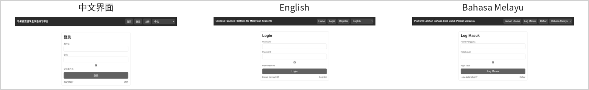
学生可填写账号、密码、姓名、邮箱、电话、学号、国籍和语言信息完成注册。该功能对应访问路径 /register，主要接口或路由为 /api/auth/register，核心数据对象为 users。该图展示学生注册入口的三语表单效果，表单字段覆盖账号、密码、姓名、邮箱、电话、学号、国籍等基础资料。它对应学生注册需求，说明系统为留学生提供自助建档能力，注册数据写入用户表后可作为练习记录、错题本和个人资料维护的用户归属依据。
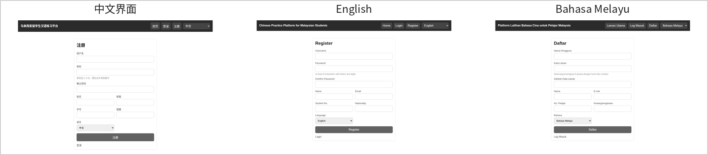
登录学生可在首页进入练习、错题本、成绩记录和个人中心，导航栏保留语言切换和退出入口。该功能对应访问路径 /，主要接口或路由为 前端路由，核心数据对象为 localStorage、users。该图展示学生登录后的主页面，中文、英文、马来语界面均以一致的导航结构呈现练习、错题本和成绩记录入口。它对应学生首页导航需求，说明系统把学习练习、复习巩固和成绩回看三个高频流程放在统一入口，便于学生在不同语言环境下快速进入学习任务。
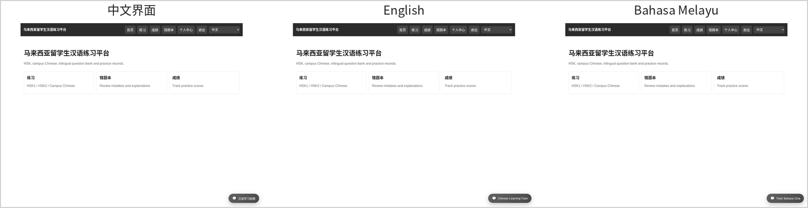
学生可查看已发布练习，列表展示试卷标题、说明、等级、题数和总分，内容随语言切换。该功能对应访问路径 /practice，主要接口或路由为 /api/learning/papers，核心数据对象为 papers、paper_translations、levels。该图展示练习列表页面的三语内容输出，练习标题、说明、等级、题目数量和总分均来自后台接口和数据库翻译表。它对应练习列表需求，说明前端语言状态会传入接口查询参数，后台按 language_code 返回对应语言的试卷、等级和题库说明，从而辅助不同语言背景学生理解练习内容。
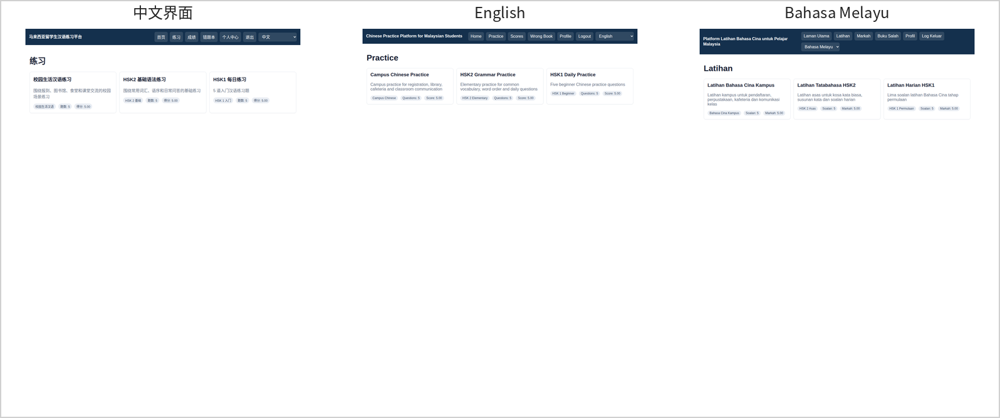
学生进入试卷后逐题阅读题干、选项、分类和难度，选择答案后进入下一题或提交。该功能对应访问路径 /practice/1，主要接口或路由为 /api/learning/papers/:id，核心数据对象为 questions、question_options。该图展示在线答题页面，三语界面均包含题目进度、分类难度、题干、选项、题号导航和提交相关按钮。它对应在线答题需求，说明学生可以在熟悉的语言界面中完成汉语题目练习，系统在页面层保持答题交互一致，在数据层保留题目、选项和解析的多语言内容。
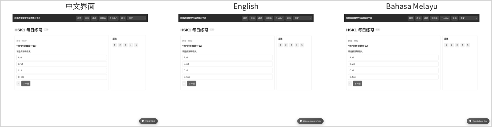
学生提交后可查看历史练习标题、题数、正确数、错误数、得分和提交时间。该功能对应访问路径 /records，主要接口或路由为 /api/learning/records，核心数据对象为 study_records、user_answers。该图展示学生成绩记录页面，三语界面以表格方式呈现练习名称、题目数量、正确数、错误数、得分和提交时间。它对应成绩记录需求，说明学生每次提交练习后都会形成可回看的学习档案，便于学生比较不同练习的完成情况，也便于后续教学分析和学习过程追踪。
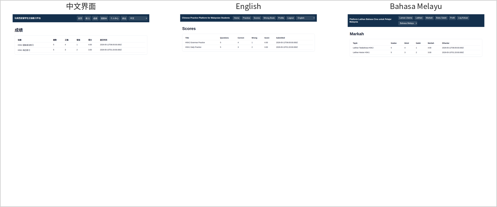
系统根据答题结果维护错题数据，学生可查看错题复习入口、错误次数和解析信息。该功能对应访问路径 /wrong-book，主要接口或路由为 /api/learning/wrong-questions，核心数据对象为 wrong_questions。该图展示错题本页面的三语呈现形式，页面用于承载错题标题、分类、错误次数和解析等复习信息，也能在暂无待复习错题时显示空状态。它对应错题复习需求，说明系统会在答题提交后维护错题记录，并为学生提供针对薄弱题目的复习入口。
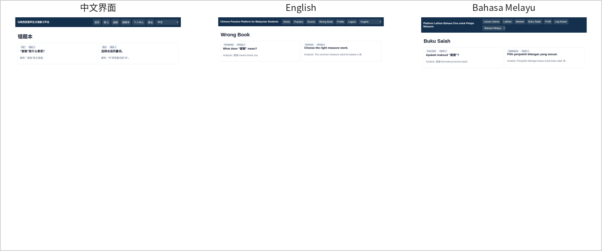
学生可维护姓名、邮箱、电话、国籍和语言偏好，后台按当前登录用户更新资料。该功能对应访问路径 /profile，主要接口或路由为 /api/auth/profile，核心数据对象为 users。该图展示个人中心页面，三语界面均提供姓名、邮箱、电话、国籍和语言偏好等资料维护字段。它对应个人资料需求，说明学生可以维护自己的学习档案和界面语言，保存后由后台按当前登录用户更新用户表，保证后续登录和学习记录展示具有个人化属性。
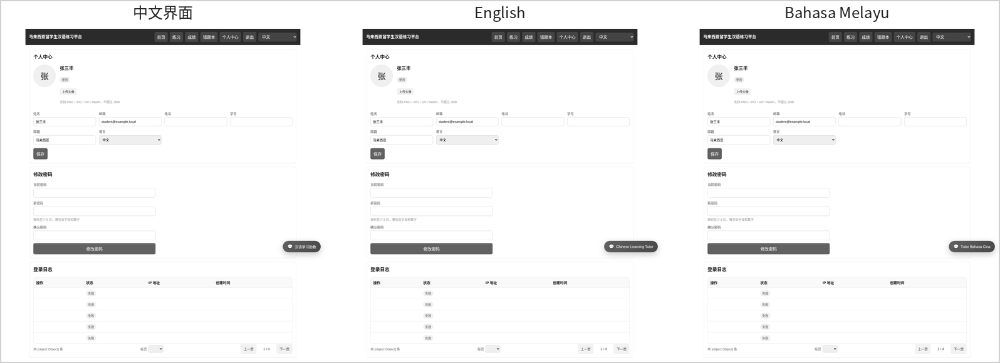
管理员可查看学生数、题目数、练习数、答题记录和平均分等平台指标。该功能对应访问路径 /admin，主要接口或路由为 /api/admin/stats，核心数据对象为 users、questions、papers、study_records。该图展示管理员数据看板，三语界面均呈现学生数、题目数、练习数和平均分等统计指标，并提供学生、题库、试卷和成绩记录入口。它对应管理看板需求，说明管理员可以通过统一首页掌握系统运行概况，快速进入教学资源和学习数据查看页面。
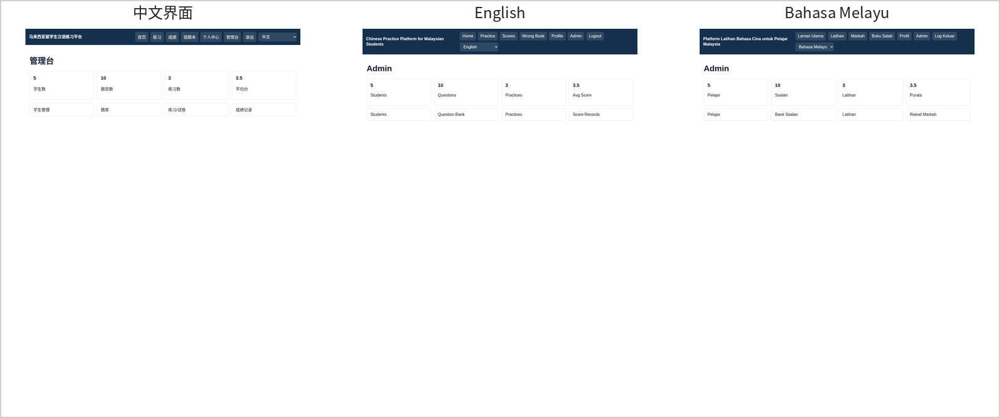
管理员可查看用户编号、用户名、姓名、角色、学号、国籍、语言和状态。该功能对应访问路径 /admin/users，主要接口或路由为 /api/admin/users，核心数据对象为 users。该图展示学生管理列表，三语界面以表格形式呈现用户编号、用户名、姓名、角色、学号、国籍、语言和状态。它对应学生管理查看需求，说明管理员可以审阅平台用户基础信息，确认学生账号、语言偏好和账号状态，为教学管理提供基础数据。
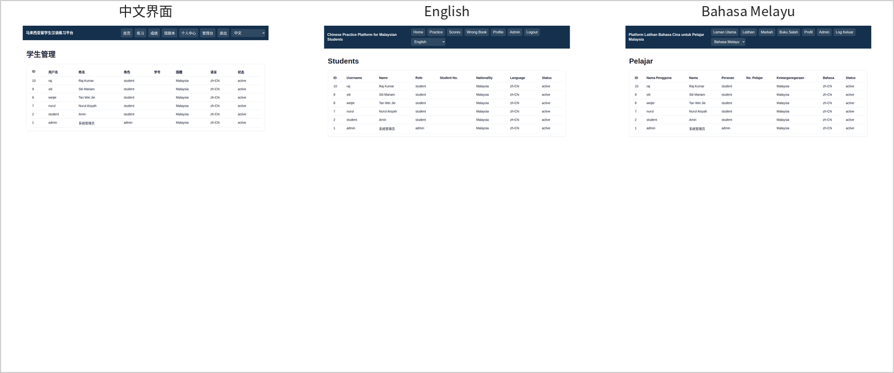
管理员可查看题目标题、等级、分类、题型、难度、分值和状态。该功能对应访问路径 /admin/questions，主要接口或路由为 /api/admin/questions，核心数据对象为 questions、question_translations。该图展示题库管理列表，三语界面显示题目标题、等级、分类、题型、难度、分值和状态。它对应题库管理查看需求，说明系统题库不仅保存题目主数据，也通过翻译表保存不同语言的题干和说明，管理员可从管理端核验题库资源是否可用于练习。
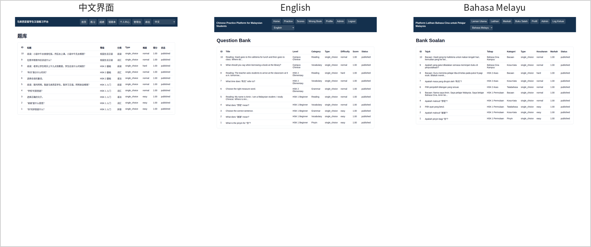
管理员可查看练习试卷的类型、题目数量、总分、时长和发布状态。该功能对应访问路径 /admin/papers，主要接口或路由为 /api/admin/papers，核心数据对象为 papers、paper_questions。该图展示练习试卷列表，三语界面呈现试卷类型、题目数量、总分、时长和发布状态。它对应练习试卷查看需求，说明系统通过试卷表和试卷题目关联表组织练习内容，管理员可以查看练习配置是否完整、分值和题量是否符合教学安排。
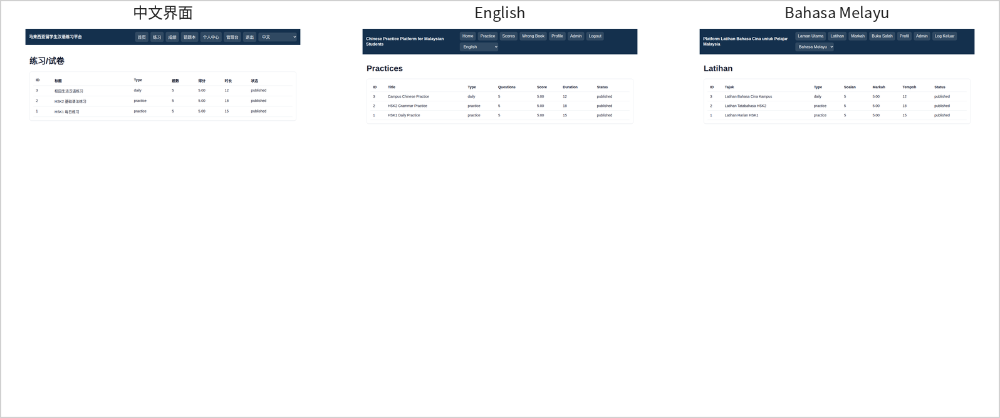
管理员可查看全量学习记录，包括学生、练习、题数、正确数、错误数、分数和提交时间。该功能对应访问路径 /admin/records，主要接口或路由为 /api/admin/records，核心数据对象为 study_records、users。该图展示成绩记录管理页面，三语界面以表格形式呈现学生、练习、题量、正确数、错误数、得分和提交时间。它对应成绩管理查看需求，说明管理员可集中查看学生练习结果，结合学生端成绩记录形成教学管理与学习反馈的闭环。
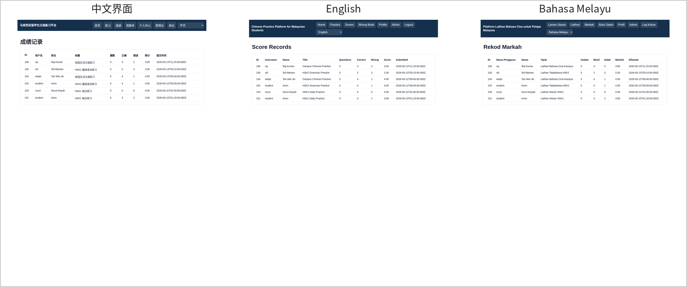
系统采用前后端分离方式运行。前台通过 Vite 构建为 H5 静态页面，浏览器加载页面后由 API 请求封装模块向后台发起 JSON 请求；后台以 Node.js 和 Express 作为运行基础，负责认证、学习练习、管理查询、日志记录和数据库访问；MySQL 负责保存题库、试卷、用户、成绩、错题和翻译数据。三部分之间通过清晰的 HTTP 接口和 SQL 数据访问边界协作，便于在开发、测试和部署阶段分别定位问题。
部署时应先准备 Node.js、npm 和 MySQL 支撑环境，再完成数据库建表、演示题库初始化和账号初始化。数据库脚本负责创建 17 张业务表、外键约束和三语演示题库；后台服务启动后暴露 /api 接口；前台可在开发环境直接由 Vite 提供页面，也可构建为静态资源后交由 Web 服务托管。实际部署中的主机地址、接口地址、数据库口令和服务器路径在登记材料中均按脱敏规则处理。
| 运行环节 | 操作内容 | 输出或作用 |
|---|---|---|
| 数据库初始化 | 执行 db:init，顺序加载 schema.sql 和 seed.sql。 | 创建库表、写入等级、分类、试卷、题目、选项和三语翻译数据。 |
| 账号初始化 | 执行 seed:users。 | 写入管理员和学生演示账号，便于功能核验和页面截图。 |
| 后台运行 | 执行 start 或 dev。 | 启动 Express 服务，提供认证、学习练习和管理端接口。 |
| 前台运行 | 执行 dev 或 build。 | 开发时提供 H5 页面，生产时输出静态资源。 |
| 日志归档 | 后台按 LOG_DIR 或默认目录写入日志。 | 记录请求状态、耗时和异常，支持运行问题追踪。 |
系统安全设计围绕账号认证、角色访问控制、数据写入一致性和日志脱敏展开。用户密码使用 bcryptjs 哈希后保存，登录接口只在账号存在且状态有效时签发 JWT。前端路由守卫根据本地令牌和用户角色限制页面访问，未登录用户访问受保护页面时会被引导到登录页，学生角色不能进入管理端页面。后台 auth 中间件对需要登录的接口校验令牌，role 中间件对管理端接口执行管理员角色校验。
异常处理方面，后台统一使用 asyncHandler 捕获异步路由错误，并在 Express 错误处理中返回标准 JSON 结构。答题提交涉及学习记录、用户答案和错题本多表写入，系统通过事务封装保证写入过程的一致性：任一环节失败时回滚事务，避免成绩记录和错题数据出现不一致。日志模块记录请求方法、路径、响应状态、耗时和用户标识，并对 authorization、password、token 等字段进行脱敏，既保留运维排查价值，又降低敏感信息泄露风险。
| 安全点 | 实现方式 | 对应文件或模块 |
|---|---|---|
| 密码保护 | bcryptjs 哈希存储，不在接口返回密码字段。 | routes/auth.js |
| 登录态控制 | JWT 携带用户 id、用户名和角色，接口侧校验令牌。 | middleware/auth.js |
| 角色权限 | 管理员接口统一挂载 allow(admin) 检查。 | middleware/role.js、routes/admin.js |
| 事务一致性 | 答题提交使用 tx 包装多表写入。 | config/db.js、routes/learning.js |
| 日志脱敏 | 日志写入前替换密码、令牌等敏感字段。 | utils/logger.js |
测试验证覆盖数据库、接口、前端构建、页面运行和文档素材生成多个层面。数据库层面已执行建表和种子数据脚本，核验结果显示 17 张业务表均存在，外键约束数量正常，试卷题目关联不存在孤儿数据，题目翻译在中文、英文、马来语下均有完整记录。接口层面已通过 smoke test 覆盖健康检查、学生登录、练习列表、试卷详情、答题提交、成绩记录、管理员登录、管理统计和用户列表等主链路。
前端层面已执行生产构建，确认 Vue 页面、路由和样式能够正常打包。运行截图层面，已启动真实后台服务和 H5 前台页面，分别采集登录、注册、首页、练习列表、答题详情、成绩记录、错题本、个人中心、管理看板、学生管理、题库管理、练习试卷和成绩管理页面，并按中文、英文、马来语生成三语并排截图。PDF 层面已使用 Chrome DevTools 打印流程生成 A4 文档，并通过页数、文件大小、中文文本抽取和敏感关键字检查进行核验。
| 验证项目 | 验证结果 | 说明 |
|---|---|---|
| 数据库结构 | 通过 | 17 张表存在，外键关系和试卷题目关联正常。 |
| 三语题库数据 | 通过 | 题目、选项、等级、分类和试卷具备三语展示数据。 |
| 学生主流程 | 通过 | 登录、练习、答题、成绩和错题功能可运行。 |
| 管理端功能 | 通过 | 看板、用户、题库、试卷和成绩列表可访问。 |
| PDF 输出 | 通过 | 设计说明书和源码稿均为 A4 PDF，中文可抽取且未命中敏感关键字。 |
马来西亚留学生汉语练习平台已经形成学生端学习练习与管理端教学查看两条主线。学生端围绕“登录注册、三语学习、在线练习、成绩回看、错题复习、资料维护”构成完整学习闭环；管理端围绕“数据看板、学生信息、题库资源、练习试卷、成绩记录”构成教学管理查看能力。系统通过多语言界面和数据库翻译表辅助不同语言背景学生理解汉语练习内容，符合面向马来西亚留学生的应用定位。
从技术实现看，系统采用 Vue 3 + Vite + Express + MySQL 的前后端分离结构，目录清晰、接口边界明确、数据库关系完整，并已接入认证授权、事务处理、请求日志和异常处理。当前材料中的图示、表格、接口说明、数据说明和三语运行截图均与可运行系统相对应，能够较完整地反映软件的设计结构、业务流程、数据组织和运行支撑能力。后续如继续扩展，可在现有管理端查看功能基础上增加题库、试卷和用户资料的新增、编辑、停用等维护操作。